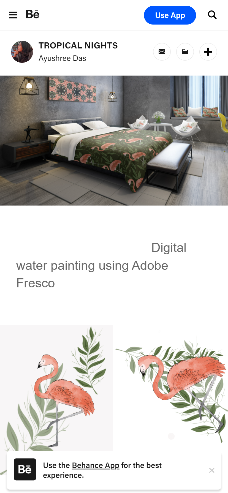
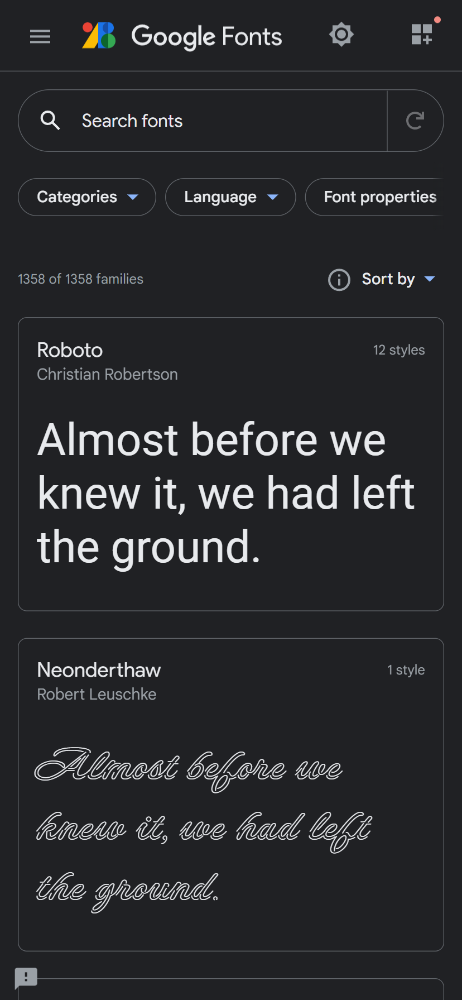
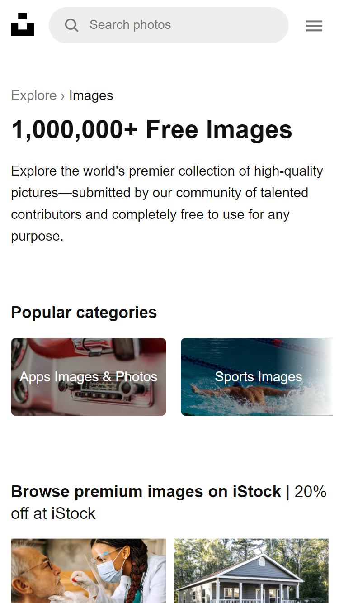

Alignment
Adobe Behance
Adobe Behance uses alignment beautifully by implementing a perfectly aligned grid pattern that's very pleasing to the eye.
Rule of Thirds
Google Fonts
In the desktop view, Google Fonts utilizes the rule of thirds perfectly. It implements a grid pattern. It aligns different fonts in three distinct columns. It looks great and makes it very easy to navigate.
White Space and Clean Design
Unsplash
Unsplash has a lot of white space on their home page. Even after picking different images and navigating to other subpages, everything is displayed in a simple, clean format.